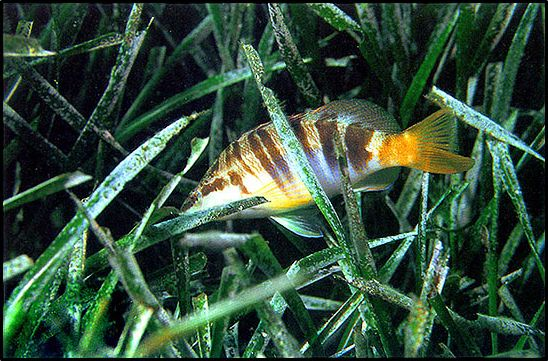

Εκτός από τα φύκη, υπάρχουν και τα ανώτερα φυτά, που προέρχονται από χερσαίους προγόνους και τα οποία επανήλθαν στο χερσαίο περιβάλλον πολλά εκατομμύρια χρόνια πριν. Αυτά σχηματίζουν λιβάδια σε αμμώδη πυθμένα με πιο χαρακτηριστικό είδος στην Μεσόγειο την Ποσειδωνία (Posidonia oceanica).
Ποσειδωνία (Posidonia oceanica)
Η Ποσειδωνία είναι ένας από τους σημαντικότερους οργανισμούς της Μεσογείου. Πρόκειται για ένα πραγματικό φυτό και όχι για φύκος, με ρίζες, κορμό και κλαδιά και έχει για την θάλασσα τόση σπουδαιότητα όση τα κοράλλια για τις νότιες θάλασσες. Η ποσειδωνία προσφέρει προστασία, υποστήριξη και τροφή σε ένα πλήθος μικροοργανισμών και σε αναρίθμητα ψάρια. Ο ρόλος της στην ισορροπία του περιβάλλοντος και στην επιβίωση των ειδών είναι πρωταρχικός. Με τα μακριά της φύλλα αναχαιτίζει τα θαλάσσια ρεύματα, ενώ με τις ρίζες της συγκρατεί το έδαφος του βυθού και εμποδίζει την διάβρωση, καθώς το πλέγμα αυτών των ριζών ενεργεί ως προστατευτικό δίχτυ για τα μαλακά και ευκολοδιάλυτα στοιχεία του, κρατώντας τα σε συνοχή. Επιπλέον αποτελεί τόπο αναπαραγωγής όλων των ζωικών θαλάσσιων οργανισμών, από τα μαλάκια και τα οστρακόδερμα ως και τα ψάρια. Η σπουδαιότητα της Ποσειδωνίας είναι τόσο μεγάλη, που όλα τα Μεσογειακά κράτη με διεθνείς συνθήκες και νόμους, την προστατεύουν. Τα λιβάδια της Ποσειδωνίας, τις λεγόμενες φυκιάδες, τις συναντάμε σε βάθη από 1-40 μέτρα και αναπτύσσονται σε καθαρά και διαυγή νερά.
